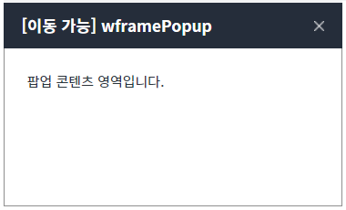
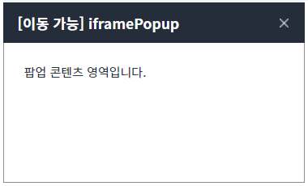
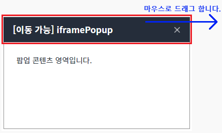
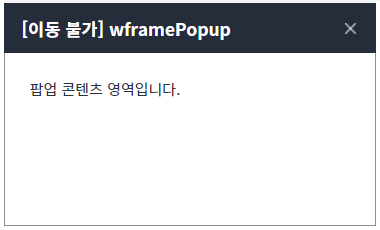
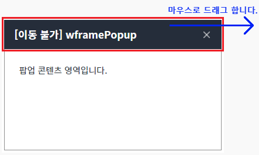
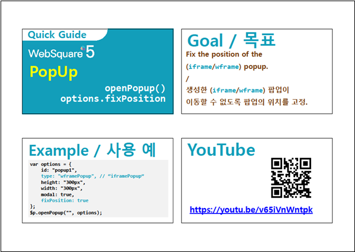

함수 '$p.openPopup'으로 생성된 팝업의 위치를 고정(팝업 이동 불가)하는 예제입니다. (사용자가 팝업의 타이틀 영역을 마우스로 드래그하여 팝업을 이동시킬 수 없습니다.)
이 기능은 함수 '$p.openPopup'의 두 번째 인자의 속성 'fixPosition'에 설정할 수 있습니다. 속성 'fixPosition'은 두 번째 인자의 속성 'type'이 'wframePopup' 또는 'iframePopup'으로 설정되었을 때 제공됩니다.
설정 값에 따른 동작은 다음과 같습니다. - "false" : [default] 팝업의 위치를 고정하지 않습니다. - "true" : 팝업의 위치를 고정합니다.
함수 '$p.openPopup'의 의 두 번째 인자의 속성 'fixPosition'은 아래의 엔진부터 제공됩니다.
- RC: 5.0_5.4811B.20230203.095105
- GA: 5.0_5.4877A.20230405.131227
이 예제는 마우스 사용이 가능한 환경에서 정상 동작합니다.
팝업의 위치 고정하지 않기
팝업의 위치 고정하기
STEP 1. 위치를 고정하지 않은 'wframe' 팝업을 생성합니다.
예제 영역 [(기본 설정) 팝업의 위치 고정하지 않기]의 버튼 1.1 wframe 팝업 열기를 클릭합니다.
STEP 2. 실행된 결과를 확인합니다.
팝업이 생성됩니다. 생성된 팝업의 타이틀은 '[이동 가능] wframePopup'입니다.
그림 1.브라우저(Chrome) 실행 예시

STEP 3. 팝업의 타이틀 영역을 마우스로 드래그하여 위치를 이동시킵니다.
그림 2.브라우저(Chrome) 실행 예시
STEP 4. 실행된 결과를 확인합니다.
팝업의 위치가 이동됩니다.
STEP 5. 위치를 고정하지 않은 'iframe' 팝업을 생성합니다.
버튼 1.2 iframe 팝업 열기를 클릭합니다.STEP 6. 실행된 결과를 확인합니다.
팝업이 생성됩니다. 생성된 팝업의 타이틀은 '[이동 가능] iframePopup'입니다.
그림 3.브라우저(Chrome) 실행 예시

STEP 7. 팝업의 타이틀 영역을 마우스로 드래그하여 위치를 이동시킵니다.
그림 4.브라우저(Chrome) 실행 예시

STEP 8. 실행된 결과를 확인합니다.
팝업의 위치가 이동됩니다.
STEP 1. 위치를 고정한 'wframe' 팝업을 생성합니다.
예제 영역 [팝업의 위치 고정하기]의 버튼 2.1 wframe 팝업 열기를 클릭합니다.
STEP 2. 실행된 결과를 확인합니다.
팝업이 생성됩니다. 생성된 팝업의 타이틀은 '[이동 불가] wframePopup'입니다.
그림 5.브라우저(Chrome) 실행 예시

STEP 3. 팝업의 타이틀 영역을 마우스로 드래그하여 위치를 이동시킵니다.
그림 6.브라우저(Chrome) 실행 예시

STEP 4. 실행된 결과를 확인합니다.
팝업의 위치가 이동되지 않습니다.
STEP 5. 위치를 고정한 'iframe' 팝업을 생성합니다.
버튼 2.2 iframe 팝업 열기를 클릭합니다.STEP 6. 실행된 결과를 확인합니다.
팝업이 생성됩니다. 생성된 팝업의 타이틀은 '[이동 불가] iframePopup'입니다.
그림 7.브라우저(Chrome) 실행 예시
STEP 7. 팝업의 타이틀 영역을 마우스로 드래그하여 위치를 이동시킵니다.
그림 8.브라우저(Chrome) 실행 예시
STEP 8. 실행된 결과를 확인합니다.
팝업의 위치가 이동되지 않습니다.
함수 '$p.openPopup'의 두 번째 인자의 속성 'fixPosition'을 사용하여 구현합니다. 속성 'fixPosition'은 두 번째 인자의 속성 'type'이 'wframePopup' 또는 'iframePopup'으로 설정되었을 때 제공됩니다. 세부 스크립트는 아래의 예시에 작성되어 있습니다.
스크립트 - 팝업의 위치 고정하지 않기
// 예제 파일에서는 스크립트 'scwin.btn_exam1_1_onclick'과 'scwin.btn_exam1_2_onclick'에 작성되어 있습니다. // 팝업 생성 옵션 var jsnOptions = { id: "popup_wframe1", type: "wframePopup", // [필수] 팝업의 유형. "wframePopup" 또는 "iframePopup" fixPosition: "false", // [필수 고정 값] 팝업의 위치를 고정하지 않음(이동 가능), popupName: "[이동 가능] wframePopup" }; $p.openPopup("/page/P00404P01.xml", jsnOptions);
스크립트 - 팝업의 위치 고정하기
// 예제 파일에서는 스크립트 'scwin.btn_exam2_1_onclick'과 'scwin.btn_exam2_2_onclick'에 작성되어 있습니다. // 팝업 생성 옵션 var jsnOptions = { id: "popup_wframe2", type: "wframePopup", // [필수] 팝업의 유형. "wframePopup" 또는 "iframePopup" fixPosition: "true", // [필수 고정 값] 팝업의 위치를 고정하기(이동 불가), popupName: "[이동 불가] wframePopup" }; $p.openPopup("/page/P00404P01.xml", jsnOptions);
$p.openPopup( url , options , params , target )
options.fixPosition
options.type
$p - openPopup() & options.fixPosition
링크 : https://youtu.be/v65iVnWntpk
